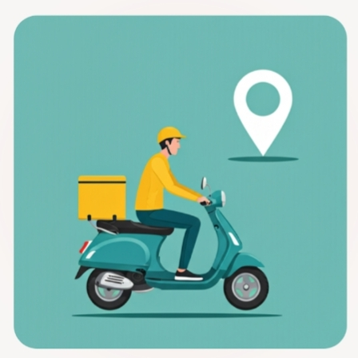

Enable Your Location
To show nearby restaurants and ensure faster delivery right to your doorstep.
We only access your location while you are using the app.
To show nearby restaurants and ensure faster delivery right to your doorstep.
We only access your location while you are using the app.